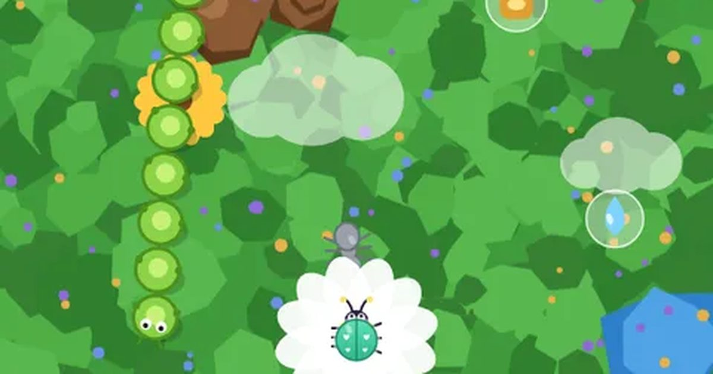

무당벌레 꽃밭
Bug Garden
피하기 · 기울이기무료설치 없음폰 · PC
▶ 지금 바로 하기로그인 없이 브라우저에서 바로 시작돼요
어떤 게임인가요?
꼬마 무당벌레 "토리"를 끌어서 솜털 방울이 떼와 애벌레 행렬을 피하세요. 봄 풀밭 → 가을 단풍길 → 밤 반딧불 숲으로 계절이 바뀌고, 꽃 9가지로 반격해요.
목표 · 쫓아오는 벌레 떼를 최대한 오래 피하며 점수를 모으세요. 한 번 닿으면 끝(Easy는 목숨 3개).
이렇게도 찾아요
피하기 게임무당벌레 피하기기울이기 게임장애물 피하기dodge gametilt gameladybug dodge
#피하기게임 #미니게임 #폰게임
게임 방법
- 무당벌레는 화면을 끌거나 방향키로, 또는 폰을 기울여서 움직여요 (시작 화면에서 조작 방식 선택). 기울이기는 시작할 때 폰 자세가 기준이에요.
- 빨간 벌레는 계속 쫓아오고, 시간이 갈수록 더 많고 빨라져요. 줄지어 구불구불 내려오는 벌레 떼도 나와요.
- 뚱벌은 크고 느리지만 세 번 맞혀야 쓰러져요. 파란 소용돌이는 근처의 무당벌레와 벌레를 빨아들여요.
- 나에게는 무기가 없어요. 떠내려오는 꽃 방울을 먹어야 반격할 수 있어요.
- 버틴 1초마다 10점, 벌레 20점, 뚱벌 100점, 별 방울 300점.
등장하는 것들
- 빨간 꽃 · 5초 동안 거대 꽃으로 변신 · 닿는 적 모두 파괴
- 흰 데이지 · 6초 보호막 · 적을 튕겨 내고 잠시 얼림
- 초록 잎 · 7초 동안 가장 가까운 적을 조준해 잎이 날아감
- 분홍 광선 · 3초 동안 위쪽으로 꽃가루 광선
- 별 · +300점
- 파란 소용돌이 · 가까이 가면 빨려 들어가요
공략 팁
- 벌레를 한쪽으로 몰고 크게 돌면 떼가 한 줄로 따라와요.
- 거대 꽃은 벌레 떼 한가운데로 돌진할 때 쓰세요.
- 보호막 중엔 벌레를 튕겨 얼릴 수 있어요. 얼어 있는 빨간 벌레는 닿아도 괜찮아요.
- 소용돌이 근처는 피하되, 반대로 벌레를 모으는 데 쓸 수도 있어요.
 씽씽 카트
씽씽 카트 과일 합치기
과일 합치기 2048
2048 색실 잇기
색실 잇기 윷놀이
윷놀이 방울 터뜨리기
방울 터뜨리기